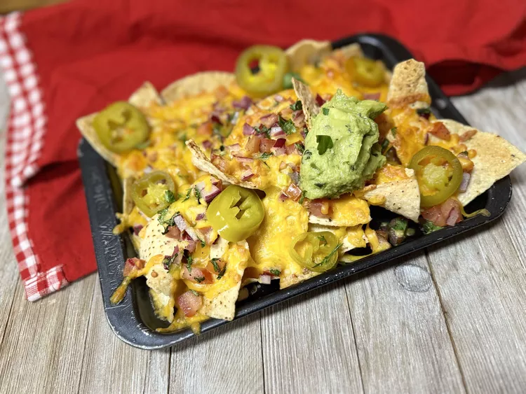

Nachos

Description
Nachos are a heap of crunchy tortilla chips smothered in melty cheese. You can add a kick
from jalapenos and a splash of salsa, or make them a bit more filling by adding beef and guacamole.
They are a tasty snack for scarfing down while watching a game, or for sharing at the pub. Either way they are
a chill, hearty, and sometimes messy good time.
Ingredients
- Tortilla Chips
- Shredded Cheddar Cheese
- Guacomole
- Jalepenos
- Salsa
Steps
- Preheat oven to 350 degrees F.
- Spread tortilla chips into a single layer onto a baking sheet.
- Top with a layer of cheddar cheese, jalapenos, and then another layer of cheese.
- Bake nachos in the preheated over until the cheese is bubbling.
- Add a generous amount of guacamole and salsa.
- Enjoy!
Home